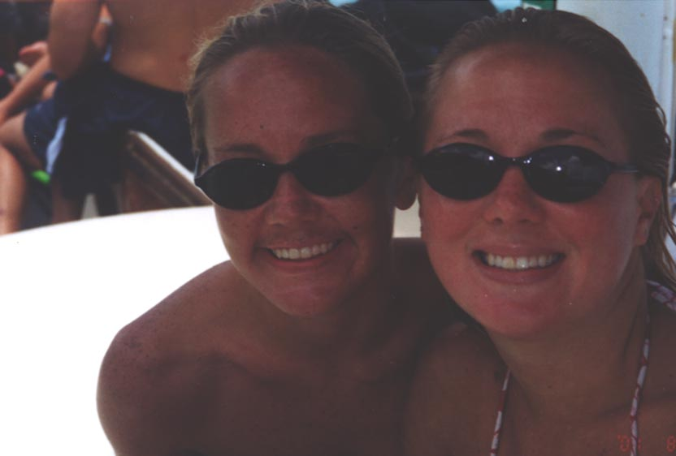

At 23, Erin was scheduled to have a routine, albeit painful hemorrhoidectomy. Although somewhat embarrassed, she was anxious to go ahead since she had been told this simple, outpatient procedure would provide much needed relief.
The surgery went as planned and Erin was discharged into the care of her parents. Because there would be pain, Erin was prescribed Vicodin to manage it. Her surgeon was going out of town, so she was given the covering surgeon’s contact number in case there were any problems. When Erin began experiencing more pain than expected, a physician friend prescribed a stronger injected analgesic (pain killer) and his wife, a nurse, administered it.
Two days later, the pain didn’t lessen – it got worse. This wasn't supposed to happen, so Erin’s mother drove her to a local hospital – not the one where the surgery was done – to have Erin checked. The emergency room doctor noticed that Erin’s white blood cell count was higher than it should be – in fact, it was double. This usually indicates an infection and since Erin recently had surgery, this would make sense. But antibiotics, the treatment for infection, can also cause diarrhea, so the doctor decided that it would be best not to give them. Instead, Erin was prescribed a cream to apply and sent home. The Flatleys didn’t learn about this blood test result until after Erin died.
The pain wasn’t getting better – Erin rated it the highest on a scale of 1 to 10. She was having problems urinating and had to be catheterized. At one point, her urine began to look cloudy, and her abdomen became puffy. It was time to go back to the hospital. At the hospital, Erin wasn’t considered an urgent case. Blood tests showed very high white blood cell counts and the doctor thought Erin may have a kidney infection. Finally an antibiotic was prescribed. This medicine was not given to Erin for hours. And then she waited for a CAT scan. And waited. Although she was hungry and thirsty, she wasn’t allowed to take anything by mouth because she hadn’t yet had the scan. Erin began shaking and thrashing about.
Another doctor saw her and ordered three more antibiotics but five hours later, they had not yet been administered. Erin’s dad could see there was something wrong as soon as he entered her room. Erin’s heart rate was high, her blood pressure was low. When Dr. Flatley insisted on speaking with the doctor, he was told Erin may be “septic” and could possibly die.
Erin's story was reported in the St. Petersburg Times.
Erin was my younger sister by 27 months. However, in many ways, I looked up to her. She had a zest for life that was contagious, she could always make me smile, and she was a continuous source of fun! I feel lucky to have been blessed with such a wonderful sister for almost 24 years. I cherish every one of the wonderful memories we shared.
Erin and I lived together when she went in for her surgery. I remember the morning of April 24th, 2002, when she was leaving to have the surgery. She was crying because she was frightened. I assured her everything would be fine and I would record her favorite t.v. shows for her. I hugged and kissed her and told her she would be so happy when it was over. We would be back to planning my wedding before she knew it. Six days after Erin walked out our front door, she was gone forever! There is not a day that goes by that I don’t wish I had not let her leave. I continue to miss her everyday!